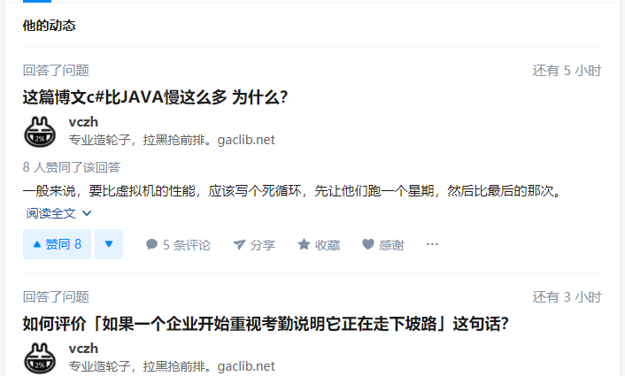
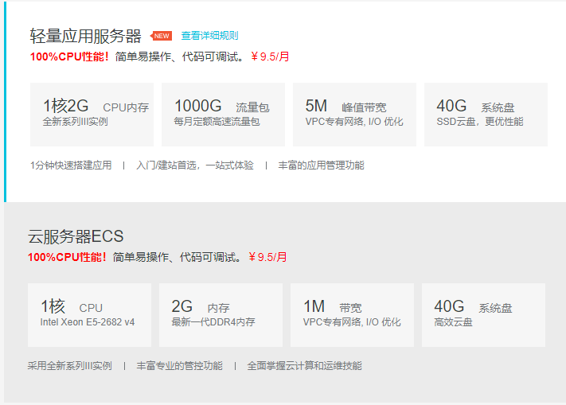

记录我过去一周看到的值得分享的东西。这阵子因为姐姐结婚的事情回了两趟老家，所以整理的东西并不多。
随笔
路由器无线桥接模式的正确使用姿势
前几天因为姐姐结婚回老家，家里没有宽带，在某个房间的窗口里能蹭到邻居家的网。
于是我掏出了我的小米路由 3，打开无限桥接模式。我说要有网，于是就有了网。
所以，路由器无线桥接模式的正确使用方法就是：蹭邻居的网。
Windows To Go
在过去的几天里，我使用一块 SSD 移动硬盘与 Windows To Go 制作了一个运行于移动硬盘中的 Windows10。现在我就在使用这个系统写博客。
我使用的主机是 14 年的中配 Mac Mini，主机自带的是一个机械硬盘，速度十分感人。当我切换为 Windows To Go 之后，USB3.0 与 SSD 配合的相当好，敲代码体验直线上升。而作为成本的 250G SSD，在经过几次降价之后，也不过 319 元。
WSL
WSL 的全称为 Windows Subsystem for Linux，它并不是虚拟机，而是完完全全的 Windows，不过可以执行 Linux 的程序与系统调用。同时，它也可以执行 exe 文件。
这几年我尝试过几种系统：Windows、Ubuntu、CentOS、Mac OS，我个人心目中的最佳系统是 Windows + Linux 工具链。WSL 可以说是在一定程度上满足了我的这个心愿。
WSL 在实际敲代码时可以与 VSCode 相结合，VSCode 会提示是否选择 WSL 环境，可以说体验很好了。我的 Windows 上就只装了 WSL 与 VSCode，却几乎可以获得和之前使用 Mac OS 以及 Ubuntu 一样的体验。
知乎的神奇操作
知乎的信息流的时间是获取的你电脑本地的时间，因此就有时候会出现这种情况：

新闻
山东理工大学副教授遛狗与两女生起冲突殴打对方，被行拘 5 日
来源：澎湃新闻
每次有关于高校的负面新闻，都会有一些人评论诸如“这就是这个学校的素质，大家不要报考这个学校”或者“这就是中国的教育”等这样的评论。
2018 年中国本科生占总人口比率约为 4%。
阿里云不再从学信网认证学生信息
阿里云面对学生开放学生机，价格便宜。15 年的时候，通过学信网认证的学生可以以每个月 10 元的价格购买 1 核 1 G，流量计费的云服务器，每个月有十几个 G 的免费流量。我在申请了之后通过参加活动续费了两年，还有两个月就要过期了。
现在阿里云不再认证学生身份，凡是年龄不到 24 岁的都可以购买学生机，但是配置也发生了变化。

不再提供无上限带宽的服务器，两款服务器都是限制带宽的。价格和原来差不多，但是因为带宽降级了，在某些方面的可用性就会有所下降（我的服务器上搭建了一个个人的网盘）。
蜻蜓计划
关于谷歌返华，这几个月一直有各种小道消息。前几天谷歌高层承认了有返回中国的计划 - 蜻蜓计划。
李彦宏说“有信心再赢谷歌一次”，但是从搜索的能力上，百度看起来十几年内都不可能赢得了谷歌。
技术杂谈
HTTP 断点续传
在下载一些大文件时，有时会出现网络波动或中断，或者用户主动选择暂停。当网络恢复之后，用户可以延续之前的进度继续下载。这个过程中产生的是 206 Partial Content，其依据是 HTTP1.1 规范中的 HTTP range requests。
资源服务器会在 HTTP header 中说明自己是否支持这个选项，浏览器会使用 HEAD 请求来进行确认。如果服务器支持，那么浏览器就可以通过 Range 信息来请求部分数据。
为了确保几次请求之间，请求的资源没有被更改，可以附带 If-Range 头来验证资源。如果资源已经被修改，那么这次请求将会返回 200（全部数据） 而非 206（部分数据）。
更多的信息，请参照 HTTP range requests - MDN